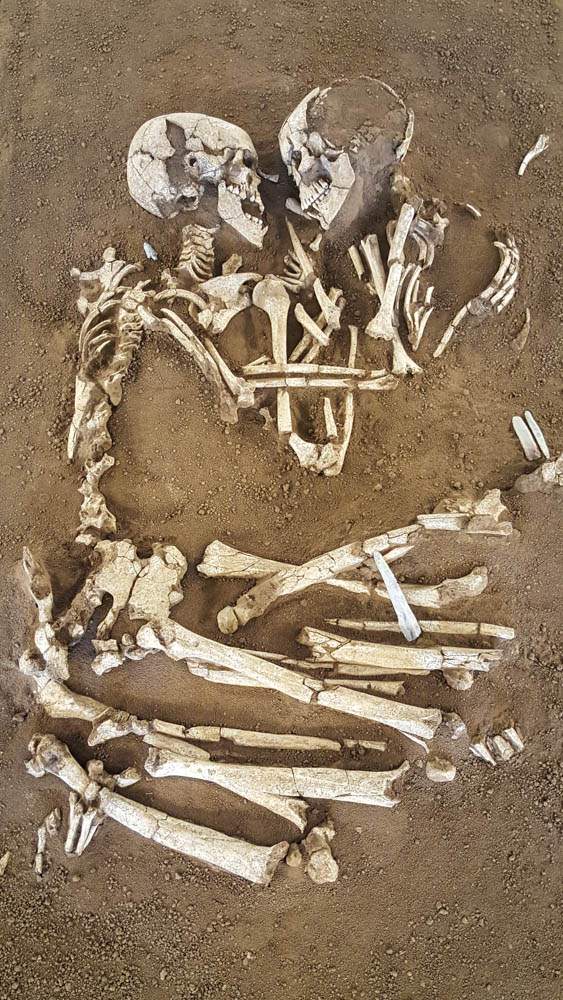

For my love...
Let this space exist as a letter...
full of our artifacts and my long list of reasons for loving you...
endlessly.
Hello Shayne!
Go to the new page
Here is our first artifact.
This artifact was made as an ode to my grandparents, Barbara & David. As a means of navigating codependency in our long-distance relationship, I photographed my lover's body and mine during the spring of 2021. My grandmother passed while battling cancer in 2014, and my grandfather, in 2020. They had married at just fifteen years old and were each other's best friends all throughout their life. When David was a security guard, he would write Barbara letters and go on about how he missed her oh so much.
While reflecting on their romance, I found myself yearning for a similar love and began to worry about if my overwhelming feelings were just like theirs, or if they were being perceived as unhealthy or obsessive. With the help of my partner and an intimate two hours of contemplation and discussion, I photographed his body and mine using film that had been expired for two years. I finished the zine and gifted it to him on our two-year anniversary.
Only two physical copies will ever exist (one belonging to myself, and the other, my partner).

- His Limbs
- His Qualities
- His Colors